Neural Networks and Backpropagation
约 2142 个字 32 行代码 16 张图片 预计阅读时间 11 分钟
1. Feature Transformation
一些特征变换可以将在原空间下线性不可分的数据，在特征空间下变得线性可分．如下图，原空间在笛卡尔坐标下难以分类，但使用极坐标可以很容易得分类出来．
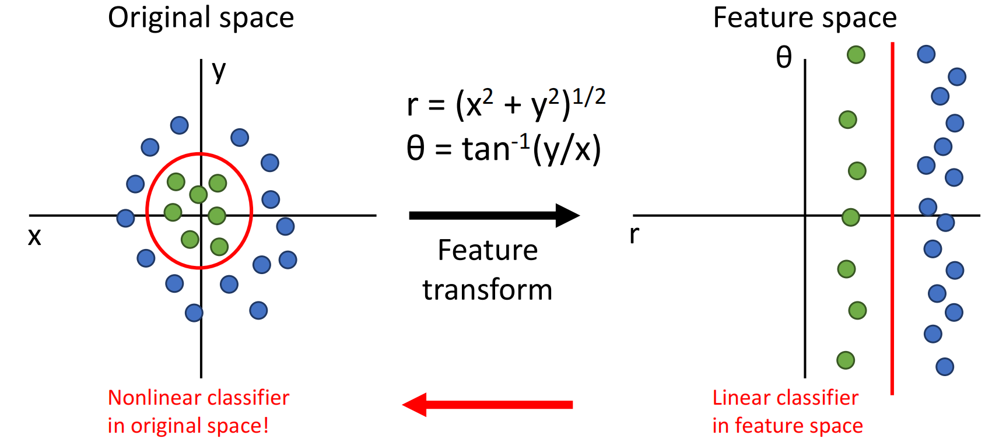
提示
在此语境下的特征变换为feature transformation．要注意此处的特征为feature，不要与线性代数中的特征弄混了，特别是特征值（feature value, eigenvalue）与特征向量（feature vector, eigenvector）．
CV历史上还使用过：
- Color Histogram（颜色直方图）：将颜色空间分成很多桶，对图像颜色做频数统计．忽略颜色出现的空间位置，只关心出现频率．
- Histogram of Oriented Gradients（方向梯度直方图特征）：将图像切成数个小区域（如 \(8\times 8\) pixel），统计小区域的方向朝向．
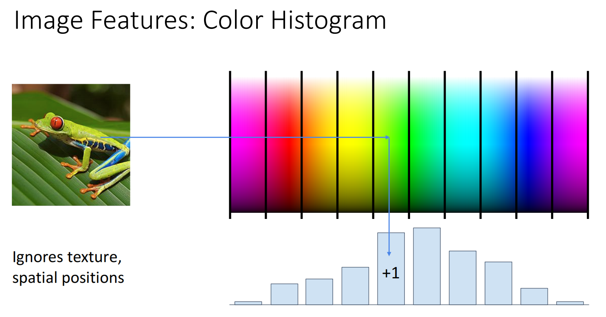
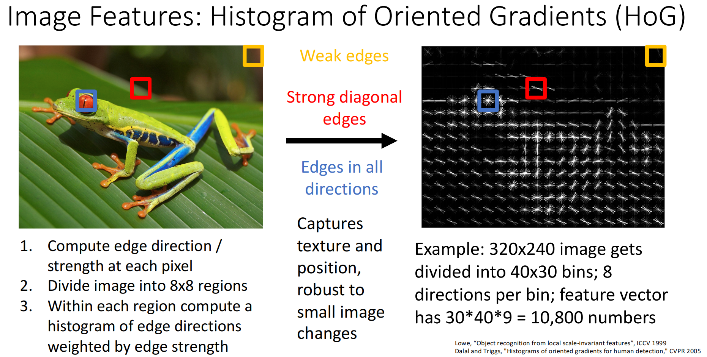
2. Neural Networks
线性分类器只使用 \(f(x)=Wx+b\)，无法表示非线性的分类界限．而神经网络通过多层线性分类与非线性的激活函数，实现非线性分类，并且能从原始数据中自动学到合适的特征表示．
常用的激活函数
激活函数必须是非线性的，以下函数都可以作为激活函数：
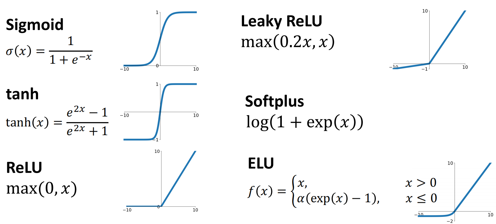
在本节课中我们默认使用ReLU，因为其使用的更加广泛，且函数较为简单（反向传播时导数只可能为0或1）．
以二层神经网络为例，其形式为 \(f(x)=W_{2}\max(0, W_{1}x+b_{1})+b_{2}\)．如果输入 \(x\in \mathbb{R}^{D}\)，输出 \(f(x)\in \mathbb{R}^{C}\)，则有 \(W_{1}\in \mathbb{R}^{H\times D},b_{1}\in \mathbb{R}^{H},W_{2}\in \mathbb{R}^{C\times H},b_{2}\in \mathbb{R}^{C}\)．
神经网络也被称为多层感知机．神经网络的层数称为其深度，一般来说，深度越深，神经网络的拟合能力越强，也越容易出现过拟合；我们需要加入正则化项来防止过拟合（而不是通过减小深度来实现）．
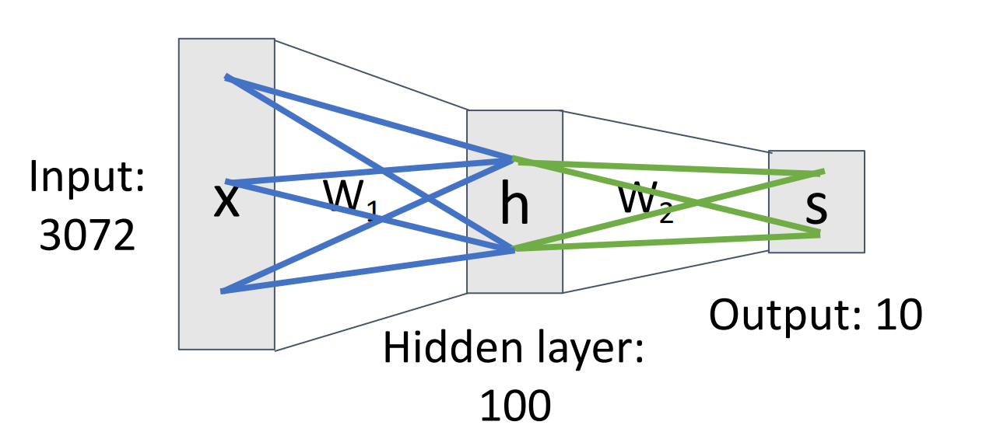
由于非线性激活函数的存在，其可以实现在原坐标系下的非线性边界．理论上，神经网络可以拟合所有 \(\mathbb{R}^{N}\to \mathbb{R}^{M}\) 的任意连续函数．
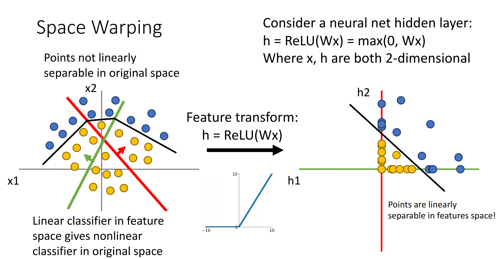
3. Backpropagation
3.1 反向传播
对于函数 \(f\)，不妨其具有输入 \(x,y\)，输出 \(z\)，并且我们已知最终的结果 \(L\) 关于输出 \(z\) 的偏导 \(\dfrac{\partial{L}}{\partial{z}}\)，那么就能用链式法则得到：
$$ \begin{aligned} &\dfrac{\partial{L}}{\partial{x}}=\dfrac{\partial{z}}{\partial{x}}\cdot \dfrac{\partial{L}}{\partial{z}} \ &\dfrac{\partial{L}}{\partial{y}}=\dfrac{\partial{z}}{\partial{y}}\cdot \dfrac{\partial{L}}{\partial{z}} \end{aligned} $$ 即为反向传播的本质．其先求出输出的偏导，再求出输入的偏导，因此为“反向”．其中：
- \(\dfrac{\partial{L}}{\partial{z}}\)：作为已知数据，称为upstream gradient（上游梯度）．
- \(\dfrac{\partial{z}}{\partial{x}},\dfrac{\partial{z}}{\partial{y}}\)：称为local gradient（局部梯度）．
- \(\dfrac{\partial{L}}{\partial{x}},\dfrac{\partial{L}}{\partial{y}}\)：称为downstream gradient（下游梯度）．
显然，下游梯度=局部梯度\(\times\)上游梯度．
一般而言，计算函数值时使用正向传播，而计算偏导时使用反向传播．
例
对于函数 \(f(x,w)=\dfrac{1}{1+e^{-(w_{0}x_{0}+w_{1}x_{1}+w_{2})}}\)，给出其计算图：
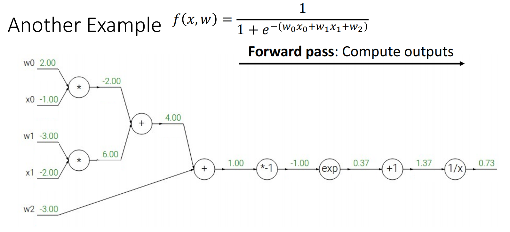
不妨设最后的结果即为目标 \(L\)．显然 \(\dfrac{\partial{L}}{\partial{L}}=1\)；对于函数 \(f(x)=\dfrac{1}{x}\)，其输入为 \(x=1.37\)，输出为 \(y=0.73\)；因此我们得到 \(\dfrac{\partial{L}}{\partial{x}}=-\dfrac{1}{x^{2}}=-\dfrac{1}{1.37^{2}}\approx 0.53\)．
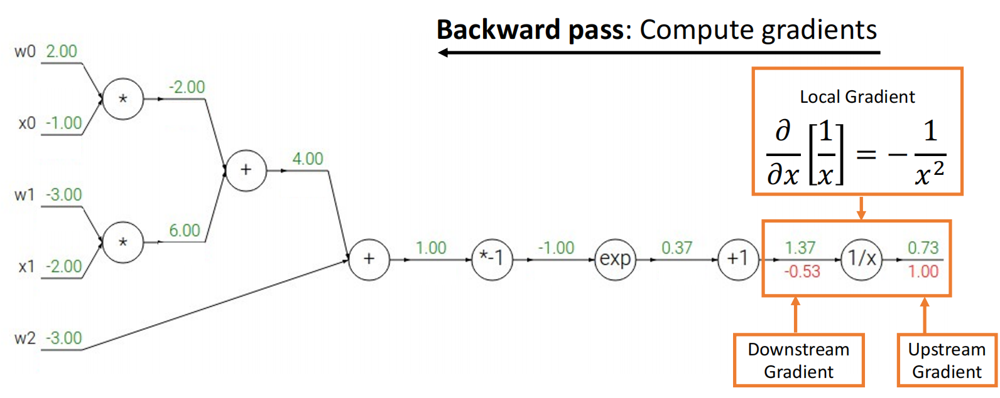
接着是函数 \(f(x)=x+1\)，偏导与前一轮一样；然后是函数 \(f(x)=e^{x}\)，其输入为 \(x=-1\)，输出为 \(y=0.37\)，上游梯度 \(\dfrac{\partial{L}}{\partial{y}}=-0.53\)，因此下游梯度 \(\dfrac{\partial{L}}{\partial{x}}=\dfrac{de^{x}}{dx}\cdot\dfrac{\partial{L}}{\partial{y}}=\dfrac{1}{e}\cdot 0.53\approx 0.20\)．
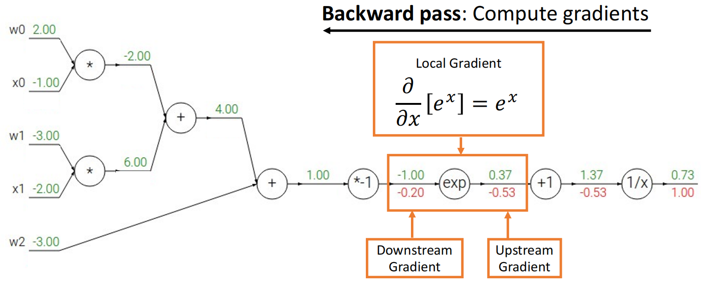
依此类推，可以求出所有偏导：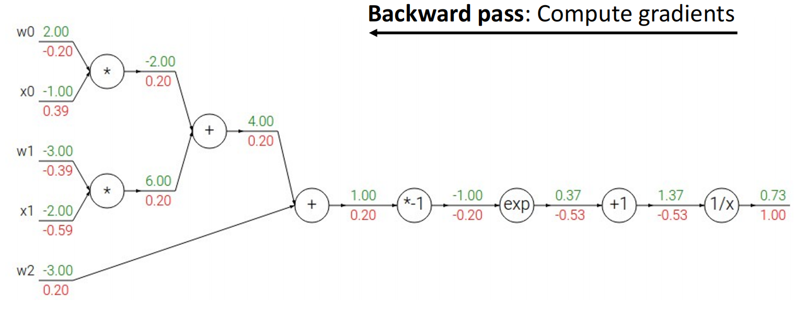
3.2 梯度流
我们可以预处理一些常用操作的梯度规律，使得运算时可以直接查表．
例
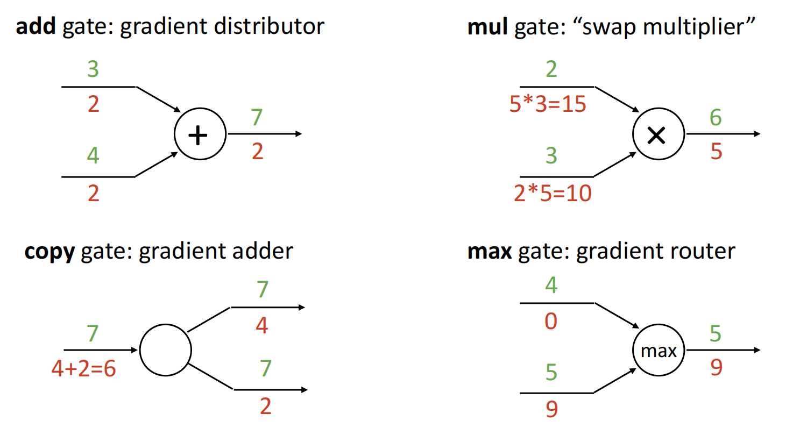
- add gate：\(f(x,y)=x+y\)，此时两边的局部梯度均为1，下游梯度与上游梯度相等．
- mul gate：\(f(x,y)=xy\)，此时两边的局部梯度为另一个变量．
- copy gate：\(f(x)=(x,x)^T\)，此时为向量值函数，其局部梯度为 \(J_f=\left(\dfrac{\partial{x}}{\partial{x}},\dfrac{\partial{x}}{\partial{x}}\right)^{T}=(1,1)^{T}\)，下游梯度为上游梯度相加．
- max gate：\(f(x,y)=\max(x,y)\)，此时较大者局部梯度为1，较小者局部梯度为0．
类似的，之前例子中的 \(\dfrac{1}{1+e^{-x}}\) 是sigmoid函数，其也可以预处理，得到
可以对求偏导的过程进行很大程度上的化简．
3.3 代码
还是那个例子，我们可以通过正向传播求函数值+反向传播求偏导的方式，模拟出来代码：
def f(w0, x0, w1, x1, w2):
# Forward Pass: Compute output
s0 = w0 * x0
s1 = w1 * x1
s2 = s0 + s1
s3 = s2 + w2
L = sigmoid(s3)
# Backward Pass: Compute grads
grad_L = 1.0
grad_s3 = grad_L * (1 - L) * L
grad_s2 = s3
grad_w2 = s3
grad_s0 = s2
grad_s1 = s2
grad_w1 = grad_s1 * x1
grad_x1 = grad_s1 * w1
grad_w0 = grad_s1 * x0
grad_x0 = grad_s1 * w0
Pytorch也提供了 torch.autograd.Function 基类，我们可以继承该基类，实现自己的函数方法；之后调用该方法，Pytorch就会帮我们自动求导：
class Multiply(torch.autograd.Function)
@Staticmethod
def forward(ctx, x, y): # ctx means context, use to store inputs
ctx.save_for_backward(x, y)
z = x * y
return z
@Staticmethod
def backward(ctx, grad_z):
x, y = ctx.saved_tensors
grad_x = y * grad_z
grad_y = x * grad_z
return grad_x, grad_y
3.4 向量求导
考虑 \(f\) 是一个 \(\mathbb{R}^{n}\to \mathbb{R}^{m}\) 的映射，其输入为 \(\boldsymbol{x}=(x_{1},x_{2},\cdots,x_{n})^{T}\)、输出为 \(\boldsymbol{y}=(y_{1},y_{2},\cdots, y_{m})^{T}\)，则
该结果是一个 \(m\times n\) 的矩阵，称为Jacobian矩阵，记作 \(J\)．
由于 \(L\) 为标量，因此 \(\dfrac{\partial{L}}{\partial{\boldsymbol{y}}}\) 形状与 \(\boldsymbol{y}\) 相同，为 \(m\times 1\)；同理 \(\dfrac{\partial{L}}{\partial{\boldsymbol{x}}}\) 形状与 \(\boldsymbol{x}\) 相同，为 \(n\times 1\)．由于Jacobian的形状为 \(m\times n\)，显然有
例
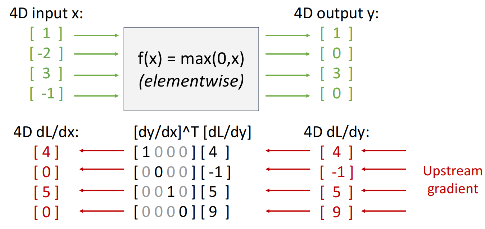
实际上由于存储Jacobian矩阵需要占用大量内存，我们并不显式存储它．我们可以通过如下公式化简：
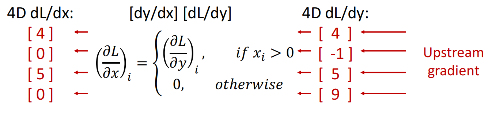
3.5 矩阵求导
考虑 \(X\in \mathbb{R}^{N\times D},W\in \mathbb{R}^{D\times M}, Y=XW\in \mathbb{R}^{N\times M}\)．接下来推导 \(\dfrac{\partial{Y}}{\partial{X}},\dfrac{\partial{Y}}{\partial{W}}\)．
首先写出分量形式
我们首先考虑 \(Y_{ab}\) 对单个元素 \(X_{ij}\) 的梯度．带入分量形式，有
其中
由于 \(\delta_{ai}\) 与 \(k\) 无关，因此
而 \(\delta_{kj}\) 相当于把求和里的 \(k\) 选成 \(j\)，因此
综上
设上游梯度记为
则对于 \(X_{ij}\)，\(\dfrac{\partial{L}}{\partial{X_{ij}}}\) 为所有 \(Y_{ab}\) 链式法则之和
带入之前的公式
因为 \(\delta_{ai}\) 相当于把求和里的 \(a\) 选成 \(i\)，因此
我们发现这是一个类似矩阵乘法的形式，将其还原为矩阵乘法，得到
我们可以从矩阵大小角度验证：\(\dfrac{\partial{L}}{\partial{X}}\in \mathbb{R}^{N\times D},\dfrac{\partial{L}}{\partial{Y}}\in \mathbb{R}^{N\times M},W^{T}\in \mathbb{R}^{M\times D}\)，结果是符合的．
同理有
这与向量求导的本质相同：由于 \(Y=XW\)，我们可以认为 \(\dfrac{\partial{Y}}{\partial{X}}\) 是 \(W\)，即 \(J\)（实际上并不是，结果是一个四维张量）．
3.6 另一个视角
如果是求标量对向量的导数，我们可以反向求，这样每一次的操作都是矩阵\(\times\)向量，而不是矩阵\(\times\)矩阵．
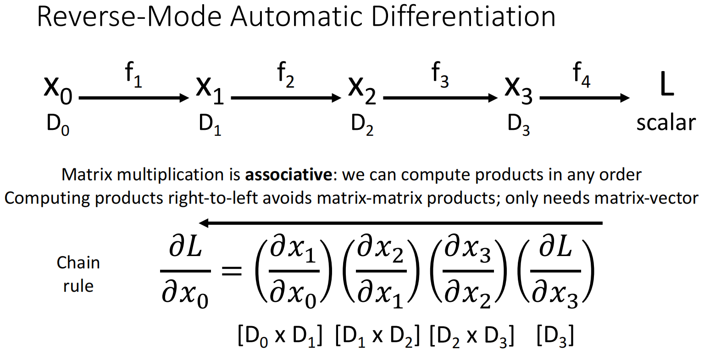
同理，如果是求向量对标量的导数，我们可以正向求．
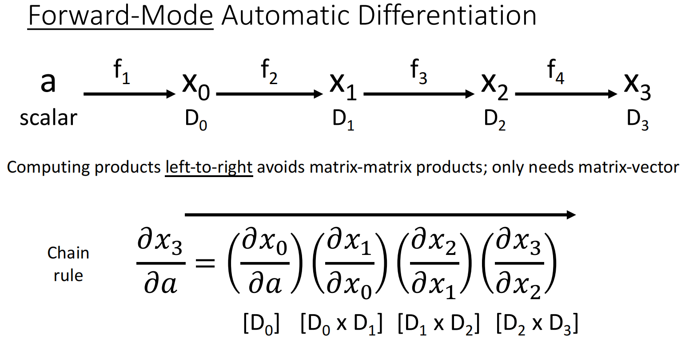
3.7 高阶导数
仅作了解即可．
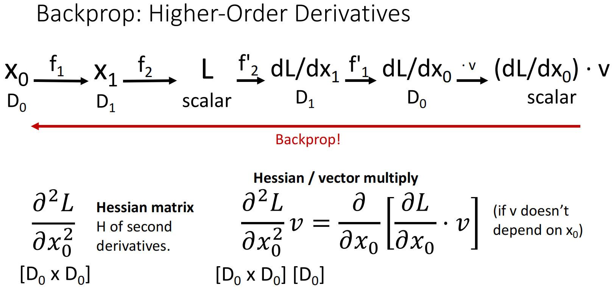
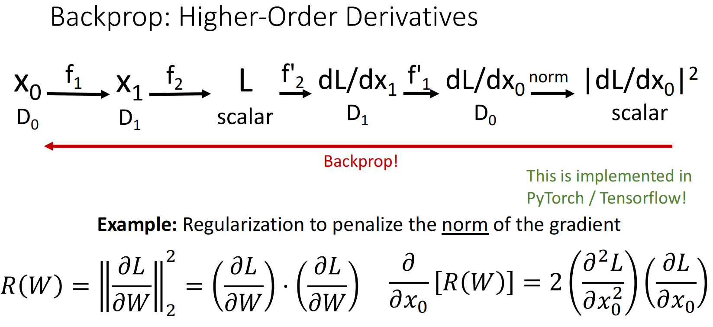